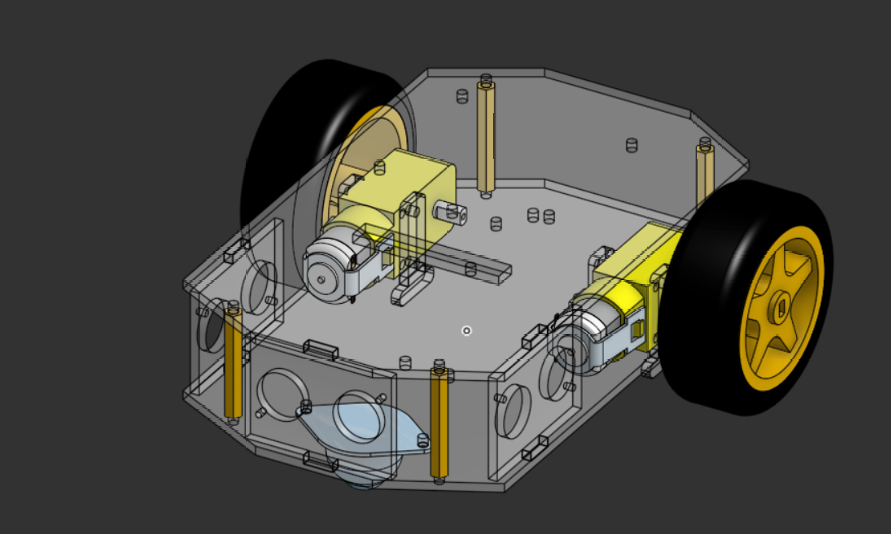

Versión 1
Semana 3 (hasta el 17/9/26)
Con la base del prototipo ya probándose, esta semana se trabajó en una versión con más detalle y funcionalidad para lo que necesitaba el equipo.
Qué se hizo
Se iteró el diseño para que se ajustara mejor a las necesidades del equipo.
Se agregaron perforaciones para fijar componentes.


Versión 1 final del robot - 17/9/26
Problemas encontrados
Al final de la semana, platicando con el equipo, se detectó que el robot podría tener dificultades para subir los obstáculos debido a la posición de la rueda loca. Una rueda loca (rueda libre que gira en cualquier dirección) puede quedarse atorada o perder contacto con el piso al llegar a un escalón, y eso afecta directamente al reto.
Decisiones
Rediseñar la motricidad del robot durante la siguiente semana (ver Versión 2).
Dejar de lado las orugas temporalmente y posiblemente de forma definitiva, para utilizar mejor el tiempo y enfocarnos en lo que más beneficios trae al equipo. Más detalles en Sistema de orugas (descartado).
Truco
Hablar con el resto del equipo antes de seguir iterando fue lo que permitió detectar el problema de la rueda loca a tiempo, antes de invertir más tiempo en un diseño que no iba a funcionar bien para los obstáculos.